description
Garnett is a superfamily that aims to approach the extremes of typographic history. The typeface was conceived as a reaction to a question posed in Carolyn Annand’s book Revival of the Fittest. In the preface to this text, Carolyn Annand poses the question, “should a typeface designer slavishly copy the original exemplar, including numerous imperfection and inconstancies? Or should one draw inspiration from earlier fonts, then exploit the vast potential of digital technology to refine and perfect letter, spacing, and details in the new rendition?”
Using this quotation as a sort of conceptual springboard, I based the initial typeface on 19th-20th century grotesques, with particular influence drawn from the work of the Stepheson Blake foundry and the Miller & Richard foundry. However, to me, one typeface was not a satisfactory resolution to the initial prompt—I wanted to design a vast amount of styles to push the idea of epitomizing, in Annand’s words, “the vast potential of digital technology.”
In addition to serving as a proof-of-concept in response
to Carolyn Annand proposition, Garnett also functions as
a type system in which the user is able to pick from a wide
variety of typefaces and classifications. The breadth of this
superfamily ranges from a contempoary interpretation of a
classic grotesque to a monospace to a backslant that draws inspiration from late-19th century display faces.